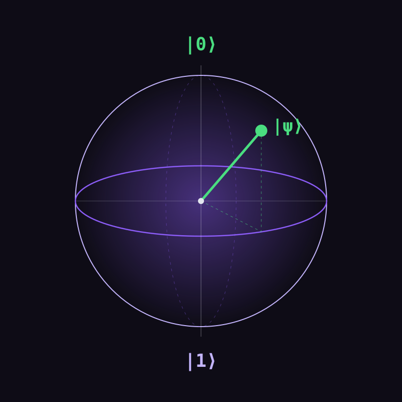

Datos Clave
| Dato | Valor |
|---|---|
| Área | Física / Cómputo |
| Unidad | Qubit |
| Tema central | QFT |
Aplicaciones
Criptografía : Algoritmo de Shor
Simulación : Moléculas y materiales
Búsqueda : Algoritmo de Grover
Optimización : Problemas combinatorios

Fórmulas
La forma más básica de describir el estado de un qubit es mediante una combinación (superposición) de sus dos estados base, |0⟩ y |1⟩. Esta combinación se representa con la siguiente fórmula:
onda = α|0⟩ + β|1⟩
| Símbolo | Significado |
|---|---|
| onda | Estado cuántico (función de onda) del qubit |
| α (alfa) | Amplitud de probabilidad asociada al estado |0⟩ |
| β (beta) | Amplitud de probabilidad asociada al estado |1⟩ |
| |0⟩ , |1⟩ | Estados base del qubit (equivalentes cuánticos del 0 y el 1) |
Normalización
Una condición importante es que las probabilidades siempre deben sumar 1. Esto se llama condición de normalización:
|α|² + |β|² = 1
Σ |uₖ|² = 1 (k = 0 … N−1, con N = 2ⁿ)
Si tienes a|0⟩ + b|1⟩ y no cumple la condición, divide entre su norma:
|ψ⟩ = (a|0⟩ + b|1⟩) / √(|a|² + |b|²)
Ejemplo: 3|0⟩ + 4|1⟩ tiene norma √(9+16) = 5, así que el estado normalizado es (3/5)|0⟩ + (4/5)|1⟩, y se cumple 9/25 + 16/25 = 1.
La normalización viene directamente de la Regla de Born, que conecta la "onda" cuántica con las probabilidades reales que se obtienen al medir el qubit:
P(0) = |α|²
P(1) = |β|²
| Símbolo | Significado |
|---|---|
| P(0) | Probabilidad de medir el qubit y obtener el resultado 0 |
| P(1) | Probabilidad de medir el qubit y obtener el resultado 1 |
| |α|² , |β|² | Magnitud al cuadrado de cada amplitud |
ψ = u₀|0⟩ + u₁|1⟩ + u₂|2⟩ + ... + uN−1|N−1⟩, con N = 2ⁿ
| Símbolo | Significado |
|---|---|
| ψ | Estado cuántico completo del sistema de n qubits |
| u₀, u₁, ... | Amplitudes de probabilidad (números complejos) de cada estado básico |
| |0⟩, |1⟩, ..., |N−1⟩ | Cada uno de los 2ⁿ estados básicos posibles del sistema |
Notación de Dirac
La notación de Dirac (bra-ket) es la forma estándar de escribir estados y operaciones cuánticas. Cada símbolo corresponde a un vector o a un número en álgebra lineal:
| Notación | Nombre | Significado |
|---|---|---|
| |ψ⟩ | Ket | Vector columna: el estado del sistema |
| ⟨ψ| | Bra | Vector fila: el conjugado transpuesto del ket (ψ†) |
| ⟨φ|ψ⟩ | Braket | Producto interno: un número complejo |
| |ψ⟩⟨φ| | Producto externo | Un operador (matriz) |
|0⟩ = 10 |1⟩ = 01
|ψ⟩ = α|0⟩ + β|1⟩ ⟨ψ| = α*⟨0| + β*⟨1|
El asterisco (*) indica el conjugado complejo. Con esto, la normalización se escribe así: ⟨ψ|ψ⟩ = |α|² + |β|² = 1. Además, los estados base son ortonormales: ⟨0|0⟩ = ⟨1|1⟩ = 1 y ⟨0|1⟩ = 0.
Compuertas cuánticas
Una compuerta es una matriz unitaria U que transforma el estado: |ψ'⟩ = U|ψ⟩. Estas son las más usadas, incluidas las que forman el circuito de la QFT:
Intercambia |0⟩ y |1⟩.
0110X|0⟩ = |1⟩
Cambia el signo de |1⟩ (invierte la fase).
100−1Z|1⟩ = −|1⟩
Crea superposición. Se usa al inicio de la QFT.
1/√2111−1H|0⟩ = (|0⟩ + |1⟩)/√2
Aplica una fase al qubit objetivo solo si el de control vale |1⟩.
100e2πi/2ᵏEs la otra pieza clave de la QFT.
Invierte el qubit objetivo si el de control vale |1⟩. Genera entrelazamiento.
1000010000010010CNOT|10⟩ = |11⟩